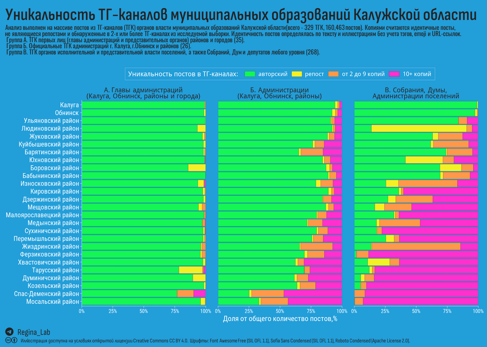
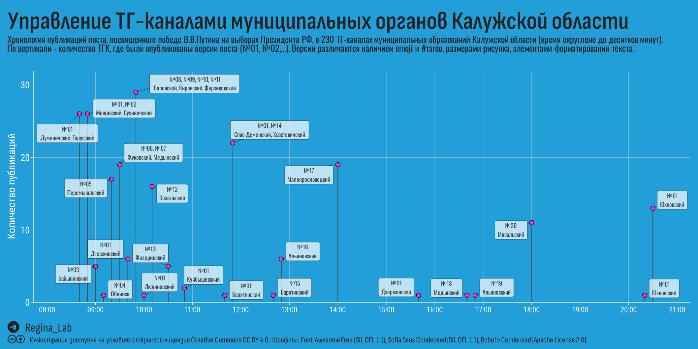
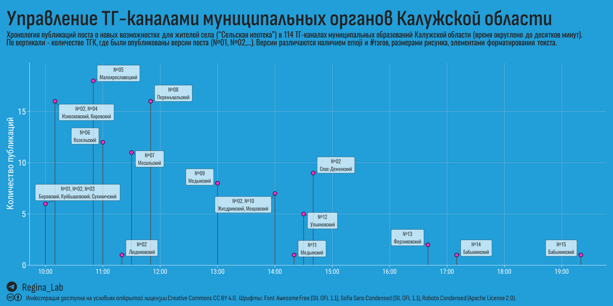

Массовые посты и креативные emoji - анализ уникальности публикаций в ТГ-каналах органов власти районов и поселений Калужской области.
Продолжаем наше исследование Телеграм-каналов (далее – ТГК, канал, каналы) Калужской области и в “День местного самоуправления” решили заглянуть в каналы районных и поселенческих администраций. Даже те из читателей, которые не могут похвастаться наблюдательностью, при просмотре официальных ТГ-каналов сельских поселений области очень скоро заметят, что перед ними мелькают одни и те же публикации. Нет, речь не репостах, а именно о “идентичных” постах, плюс/минус смайлик.
Собственно, это и определило наши следующие шаги:
разделили все каналы на 3 условных группы (А. ТГК первых лиц районов и городов, Б. ТГК администраций районов, Калуги и Обнинска, В. ТГК администраций и других органов (думы, собрания), а также депутатов.
подсчитали для каждого канала долю репостов, уникальных постов, а также таких постов, идентичные копии которых встречаются в других ТГК (см. Таблицу 1).
для районов и городов областного значения подсчитали среднюю доля постов каждого типа для каждой группы (иллюстрация).
Пример прочтения таблицы 1. Введём в поле для поиска “павлин”, что отфильтрует строку для канала “Администрация СП”Село Павлиново”. В этом канале группы В было опубликовано 85 постов, 100% из которых встречаются более чем в 10 других каналах. Иными словами, всё то, что опубликовано в этом канале, можно прочесть не менее чем в 10 других.
Среди ТГК первых лиц (группа А) самые высокие показатели уникальности у каналов главы Боровска и главы Обнинского городского собрания (последний не особо писуч и больше известен комическим даром, но раз вышел в лидеры, против цифры не попрёшь).
На иллюстрации показаны усредненные показатели для районов и городов областного значения.

Массовые посты (10+ копий) составляют 36% от общего числа всех постов в группах А, Б и В.
Ну, вообще, мы с пониманием относимся к деревенскому быту – куда там в телеграмы эти писать, когда “утром покос, вечером надои”? И наверное, разведя руками, оставили бы эту тему, но бросилась нам в глаза одна деталь – время публикации.
Из выбранных нами каналов мы выделили 3,123 текстов, копии которых разошлись по более чем 10 каналам (массовые посты). Под текстом мы подразумеваем последовательность слов без пунктуации, тэгов, emoji и форматирования, которые часто используются для придания посту “видимой” уникальности.
73% массовых постов были опубликованы в течение 1 минуты (сразу во всех каналах, где они в итоге появились), 93% – в течение 24 часов.
Наибольший тираж в 2024 году получил пост:
“Победа Владимира Владимировича – победа каждого жителя нашей страны!”. В этом уверен областной депутат Александр Козлов. Он отметил, что на своем избирательном участке видел много семей - и это радует, ведь от голосов каждой российской семьи зависит наше будущее. Как результат - легитимные выборы и рекордная поддержка президента.
Копии этого поста появились в 230 ТГ-каналах в 20 различных версиях (Таблица 2). Можно видеть, как творчески менялся контент для ТГ-каналов отдельных районов Калужской области.
На иллюстрации показана динамика публикации перечисленных в Таблице 2 версий поста. Для наглядности посты сгруппированы в 10-минутные интервалы.

Порадовало время публикации в ТГ-каналах Юхновского района – словно забыли, а потом, уже собираясь домой, такие: “А юхновцам сообщили?” И быстрее-быстрее, без всяких смайликов и тэгов, хоть в ночь, но таки успели отправить.
Еще одим пример массового поста, который был разослан 11 июля 2022 года:
👍Новые возможности для жителей села. Правительство расширило программу «Сельская ипотека». Теперь по ставке не более 3% можно взять в кредит до 6 миллионов рублей на строительство дома или покупку квартиры. Сумма удвоилась, а это значит, что комфортное жилье станет доступнее.
Копии этого поста появились в 114 ТГ-каналах в 15 различных версиях (Таблица 3). Здесь уже без спешки – с чувством подобранные emoji и аккуратные тэги.
На иллюстрации показана динамика публикации перечисленных в Таблице 3 версий поста, посты также сгруппированы в 10-минутные интервалы.

Что же мы наблюдаем?
в ТГК администраций и представительных органов власти в районах Калужской области более трети постов имеют признаки массовой (централизованной) рассылки.
Таинственная(?) невидимая рука, управляющая информированием народных масс, имеет склонность к креативу. Общественный спрос на разнообразие удовлетворяется тэгами и вдохновляющими emoji.
Наибольшее количество уникальных постов наблюдается в ТГ-каналах публичных лиц (глав администрации).
В День местного самоуправления желаем главам всех администраций побольше автономии, сил, ресурсов и креативности!
Нравятся наши материалы? 👉 ТГ-канал Regina Lab
Telegram Калужской области. Часть 3. Невидимая рука // Блог Regina Lab. - 2024. - URL: https://reginaobninsklab.github.io/posts/kaluga-tg-municipal-unique/. - Дата публикации: 21 апреля 2024 г.
Если не указано иное, то статья целиком и составляющие её текст, иллюстрации и данные могут использоваться на условиях публичной лицензии Creative Commons CC BY 4.0 Deed Attribution 4.0 International.
См. соответствующий раздел на странице “О проекте”.
Allaire J, Xie Y, Dervieux C, McPherson J, Luraschi J, Ushey K, Atkins A, Wickham H, Cheng J, Chang W, Iannone R (2023). rmarkdown: Dynamic Documents for R. R package version 2.22, https://github.com/rstudio/rmarkdown.
Ooms J (2023). magick: Advanced Graphics and Image-Processing in R. R package version 2.8.2, https://CRAN.R-project.org/package=magick.
Pedersen T (2024). patchwork: The Composer of Plots. R package version 1.2.0, https://CRAN.R-project.org/package=patchwork.
Qiu Y, details. aotifSfAf (2022). sysfonts: Loading Fonts into R. R package version 0.8.8, https://CRAN.R-project.org/package=sysfonts.
Qiu Y, details. aotisSfAf (2023). showtext: Using Fonts More Easily in R Graphs. R package version 0.9-6, https://CRAN.R-project.org/package=showtext.
Wickham H (2022). stringr: Simple, Consistent Wrappers for Common String Operations. R package version 1.5.0, https://CRAN.R-project.org/package=stringr.
Wickham H (2016). ggplot2: Elegant Graphics for Data Analysis. Springer-Verlag New York. ISBN 978-3-319-24277-4, https://ggplot2.tidyverse.org.
Wickham H, François R, Henry L, Müller K, Vaughan D (2023). dplyr: A Grammar of Data Manipulation. R package version 1.1.2, https://CRAN.R-project.org/package=dplyr.
Wickham H, Henry L (2023). purrr: Functional Programming Tools. R package version 1.0.1, https://CRAN.R-project.org/package=purrr.
Wickham H, Hester J, Bryan J (2023). readr: Read Rectangular Text Data. R package version 2.1.4, https://CRAN.R-project.org/package=readr.
Wickham H, Seidel D (2022). scales: Scale Functions for Visualization. R package version 1.2.1, https://CRAN.R-project.org/package=scales.
Wickham H, Vaughan D, Girlich M (2023). tidyr: Tidy Messy Data. R package version 1.3.0, https://CRAN.R-project.org/package=tidyr.
Wilke C, Wiernik B (2022). ggtext: Improved Text Rendering Support for ‘ggplot2’. R package version 0.1.2, https://CRAN.R-project.org/package=ggtext.
Xie Y (2023). knitr: A General-Purpose Package for Dynamic Report Generation in R. R package version 1.43, https://yihui.org/knitr/.
Xie Y (2015). Dynamic Documents with R and knitr, 2nd edition. Chapman and Hall/CRC, Boca Raton, Florida. ISBN 978-1498716963, https://yihui.org/knitr/.
Xie Y (2014). “knitr: A Comprehensive Tool for Reproducible Research in R.” In Stodden V, Leisch F, Peng RD (eds.), Implementing Reproducible Computational Research. Chapman and Hall/CRC. ISBN 978-1466561595.
Xie Y, Allaire J, Grolemund G (2018). R Markdown: The Definitive Guide. Chapman and Hall/CRC, Boca Raton, Florida. ISBN 9781138359338, https://bookdown.org/yihui/rmarkdown.
Xie Y, Dervieux C, Riederer E (2020). R Markdown Cookbook. Chapman and Hall/CRC, Boca Raton, Florida. ISBN 9780367563837, https://bookdown.org/yihui/rmarkdown-cookbook.
Yu G (2023). ggimage: Use Image in ‘ggplot2’. R package version 0.3.3, https://CRAN.R-project.org/package=ggimage.